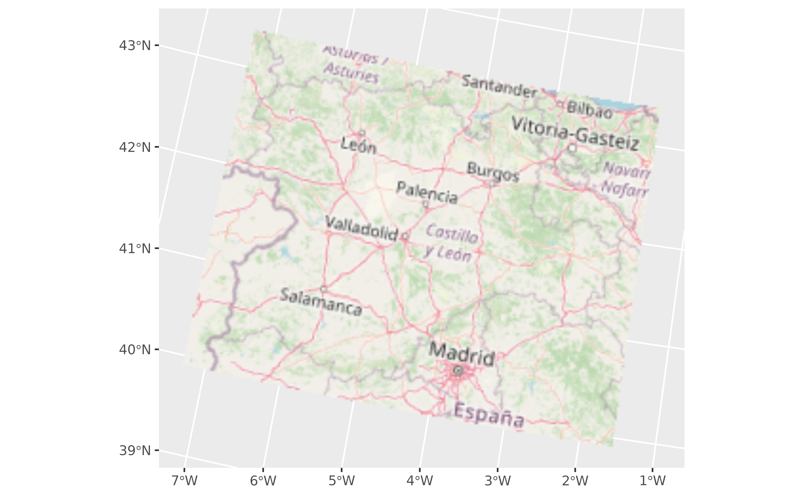

This geom is used to visualise SpatRaster objects (see terra::rast()) as
RGB images. The layers are combined such that they represent the red,
green and blue channel.
For plotting SpatRaster objects by layer values use geom_spatraster().
The underlying implementation is based on ggplot2::geom_raster().
Usage
geom_spatraster_rgb(
mapping = aes(),
data,
interpolate = TRUE,
r = 1,
g = 2,
b = 3,
alpha = 1,
maxcell = 5e+05,
max_col_value = 255,
...
)Source
Based on the layer_spatial() implementation on ggspatial package.
Thanks to Dewey Dunnington and
ggspatial contributors.
Arguments
- mapping
Ignored.
- data
A SpatRaster object.
- interpolate
If
TRUEinterpolate linearly, ifFALSE(the default) don't interpolate.- r, g, b
Integer representing the number of layer of
datato be considered as the red (r), green (g) and blue (b) channel.- alpha
The alpha transparency, a number in [0,1], see argument alpha in
hsv.- maxcell
positive integer. Maximum number of cells to use for the plot.
- max_col_value
Number giving the maximum of the color values range. When this is
255(the default), the result is computed most efficiently. SeegrDevices::rgb().- ...
Other arguments passed on to
layer(). These are often aesthetics, used to set an aesthetic to a fixed value, likecolour = "red"orsize = 3. They may also be parameters to the paired geom/stat.
Coords
When the SpatRaster does not present a crs (i.e.,
terra::crs(rast) == "") the geom does not make any assumption on the
scales.
On SpatRaster that have a crs, the geom uses ggplot2::coord_sf() to adjust
the scales. That means that also the SpatRaster may be reprojected.
See also
ggplot2::geom_raster(), ggplot2::coord_sf(), grDevices::rgb().
You can get also RGB tiles from the maptiles package,
see maptiles::get_tiles().
Other ggplot2 utils:
autoplot(),
fortify.Spat,
geom_spat_contour,
geom_spatraster(),
ggspatvector,
stat_spat_coordinates()
Examples
# \donttest{
# Tile of Castille and Leon (Spain) from OpenStreetMap
file_path <- system.file("extdata/cyl_tile.tif", package = "tidyterra")
library(terra)
tile <- rast(file_path)
library(ggplot2)
ggplot() +
geom_spatraster_rgb(data = tile) +
# You can use coord_sf
coord_sf(crs = 3035)

# Combine with sf objects
vect_path <- system.file("extdata/cyl.gpkg", package = "tidyterra")
cyl_sf <- sf::st_read(vect_path)
#> Reading layer `cyl' from data source
#> `D:\a\_temp\Library\tidyterra\extdata\cyl.gpkg' using driver `GPKG'
#> Simple feature collection with 9 features and 3 fields
#> Geometry type: MULTIPOLYGON
#> Dimension: XY
#> Bounding box: xmin: 2892687 ymin: 2017622 xmax: 3341372 ymax: 2361600
#> Projected CRS: ETRS89-extended / LAEA Europe
ggplot(cyl_sf) +
geom_spatraster_rgb(data = tile) +
geom_sf(aes(fill = iso2)) +
coord_sf(crs = 3857) +
scale_fill_viridis_d(alpha = 0.7)
 # }
# }